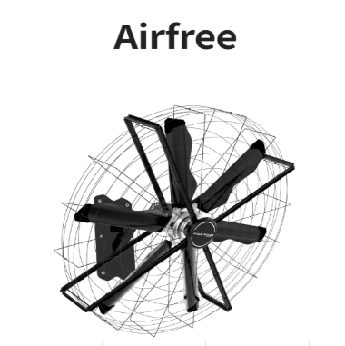
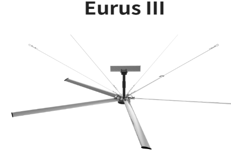

MIRACID CUENTA CON SOCIOS LÍDERES EN LA FABRICACIÓN DE EQUIPOS DE VENTILACIÓN HLVS, dando como principal función mantener la calidad del aire interior y aumentar el conford y productividad de las personas dentro de la fábrica.
Fabricante especializado en crear soluciones innovadoras en sistemas de HVAC líder en el mercado de soluciones de ventilación industrial, especializada en el diseño, fabricación y distribución de ventiladores HVLS (High Volume, Low Speed). Estos ventiladores están diseñados para ofrecer una circulación de aire eficiente, en el siguiente sector:
Compromiso con la innovación y la calidad Kale Fans America se distingue por su compromiso con la innovación. La empresa invierte continuamente en investigación y desarrollo para ofrecer productos que incorporen las últimas tecnologías en eficiencia energética y diseño. Además, todos los ventiladores cumplen con estrictos estándares de calidad y seguridad, garantizando un rendimiento óptimo y una larga vida útil.


Copyright 2025 – All Rights Reserved By Miracid Soluciones Integrales S.A. de C.V.